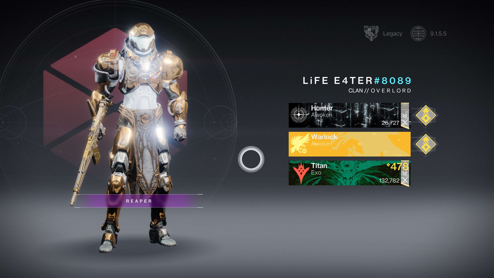
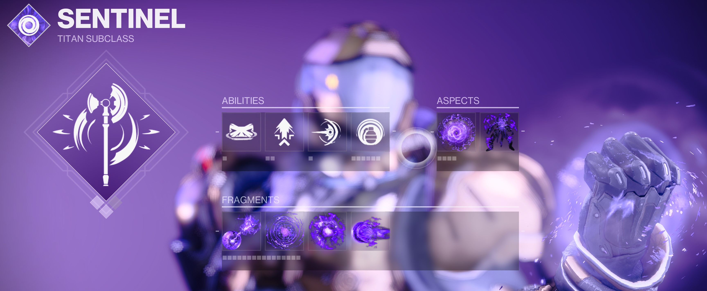
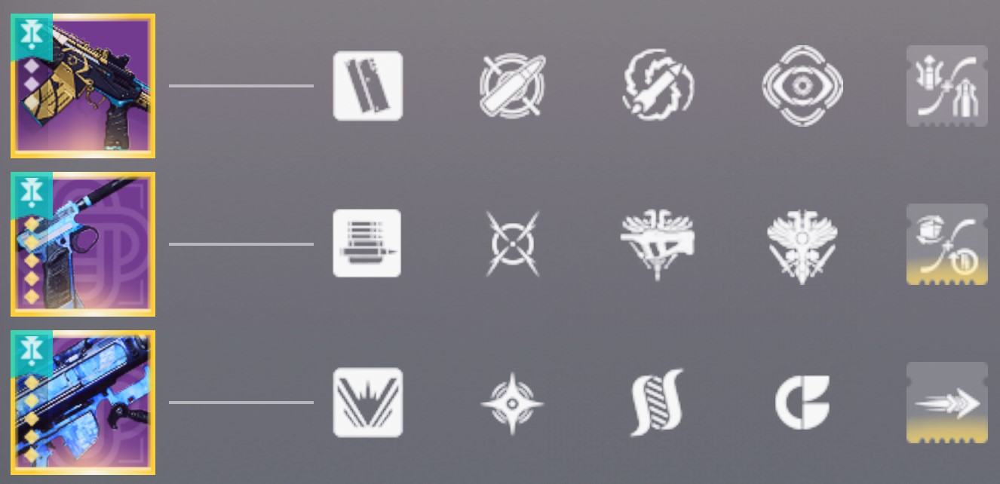
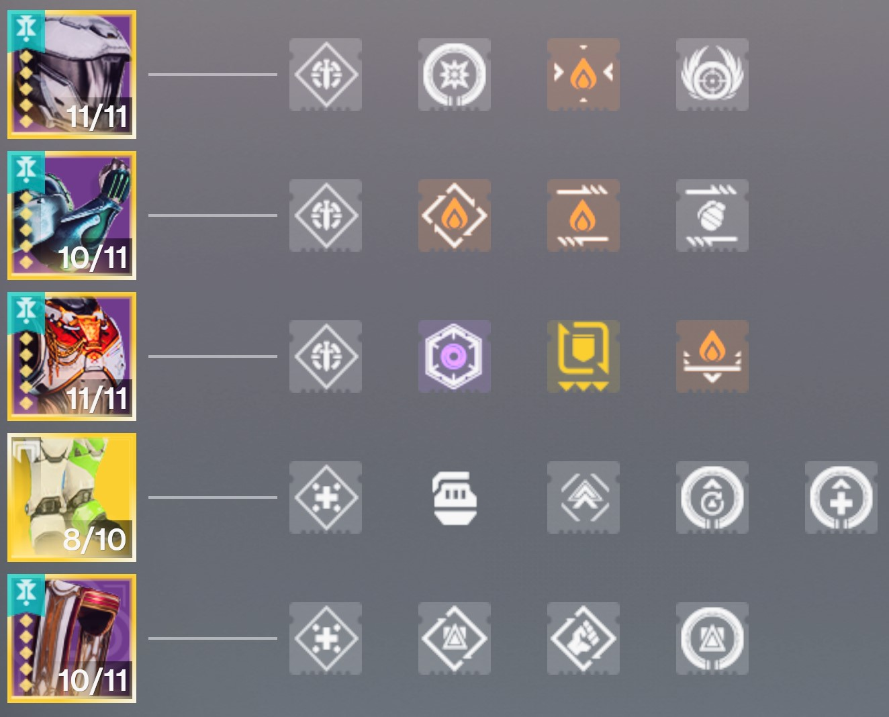

3v3 Build: Void Titan
This Void Titan build is designed for 3v3 battles like Trials of Osiris or Competitive, focusing on team survivability and control. This build utilizes the defensive power of Overhsields and Suppressor Grenades to neutralize the enemy
My Guardian in Full Gear
3 v 3 Gameplay
Strengths of This Build
- Team survivability with constant Overshields
- Suppress enemies to prevent ability use
- Rapid health regeneration on Orb pickup
- High mobility with Dunemarchers for quick pushes or retreats
- Flush out enemies with Shield Throw
Recommended Subclass, Abilities, Aspects & Fragments
Subclass:
- Void Twilight Arsenal
Abilities:
- Rally Baricade: Creates a small barrier to peak over while aiming down sights; increases weapon reload speed, stability, and range. Draws hostile fire when you stand behind it.
- Shield Throw: Hurl your Void Shielf toward a target. The shielf can richochet off targets and surfaces, granting Overshield for each target hit
- Supressor Grenade: An explosive grenade that suppresses, preventing targets from using abilities for a short time
Aspects:
- Bastion Cast your Super to grant Overshield to nearby allies. Casting your Barricade grants Overshield to yourself and nearby allies and empowers it, enabling it to slowly regenerate the Overshield of allies bunkering behind it and extend their Overshield duration
- Controlled Demolition: Hitting a target with a Void ability or Volatile explosion makes them volatile. Further damage to a volatile target causes themm to explode. Grants you and nearby allies health when volatile targets explode near you
Fragments:
- Echo of Leeching: Melee final blows start health regeneration for you and nearby allies
- Echo of Dilation: While crouched, you sneak faster and gain enhanced radar resolution
- Echo of Expulsion: Void ability final blows cause targets to explode
- Echo of Domineering: After suppressing a target, you gain increased weapon stat for a short duration, and your equipped weapon is reloaded from reserves. Defeating suppressed targets creates a Void Breach
Weapon Loadout
Kinetic Weapon:
- Everburning Glitz with Dynamic Sway Reduction: Rapidly improves accuracy and stability while continously holding down the trigger
Energy Weapon:
- Drang with Master of Arms: Final blows with any weapon improve this weapon's damage for an improved duration
Heavy Weapon:
- Haliatus with Cluster Bomb: Rockets spawn cluster bombs upon detonation. Blast radius is increased
Armor Mods
Helmet Mods:
- Kinetic Siphon: Kinetic weapon final blows create an Orb of Power
- Solar Targeting: Improved target acquisition, accuracy, and aim-down-sights speed for Solar weapons
- In-Flight Compensator: Increases the airborne effectiveness of all equipped weapons
Arm Mods:
- Solar Loader: Increases reload speed of Solar weapons
- Solar Dexterity: Faster ready and stow speed for Solar weapons
- Fastball: Increases grenade throw distance
Chest Mods:
- Resistance Mods: change depending on combatant’s damage type
- Emergency Reinforcement: When your shields become broken, you gain temporary damage reduction
- Unflinching Solar Aim: Reduces flinching from incoming fire while aiming a Solar weapon
Exotic Legs:
- Dunemarchers: Increases spring speed. Sprinting builds up a static charge. After melee attacking a combatant, that charge will chain damage to nearby foes.
Leg Mods:
- Better Already: Your health begins to regenerate immediately after picking up an Orb of Power
- Absolution: Reduces all ability cooldowns each time you pick up an Orb of Power
- Enhanced Athletics increases movement speed and jump height
Mark Mods:
- Reaper: shortly after using your class ability, your next weapon final blow spawns an Orb of Power
- Outreach: Reduces melee cooldown when using your class ability
- Distribution: reduces all ability cooldowns when using your class ability near targets
How This Build Works
- Initiate combat by throwing a Suppressor Grnande to prevent enemies from using abilities
- Deploy Rally Barricade to generate Orbs of Power,boost weapon stats, and provide Overshield to yourself and nearby allies
- Picking up Orbs of power replenishes health and reduces ability cooldowns
- Dunemarchers increases sprint speed to quickly push, reposition, or retreat
- Flush out enemies from behind cover with Shield Throw, granting you more Overshield for each target hit